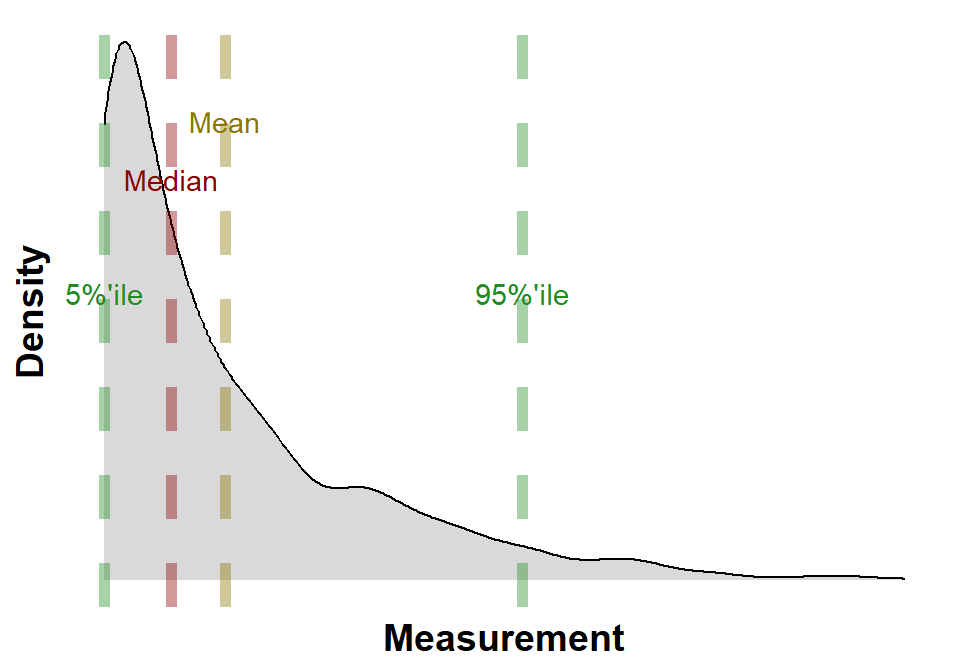

Glossary
1 Data Management
Data management encompasses a wide range of activities, including: collecting, organizing, storing, and securing data. It is a critical function for any organization or individual that wants to make effective use of its data.
Data management is essential for:
- Making informed decisions: By having access to accurate and timely data, organizations can make better decisions about their operations, marketing, and products.
- Improving efficiency: By identifying and eliminating inefficiencies in their operations, organizations can save money and time.
- Complying with regulations: By properly managing their data, organizations can avoid fines and penalties for non-compliance.
- Protecting reputation: By preventing data breaches and other security incidents, organizations can protect their reputation and avoid financial losses.
1.1 Tidy Data
Tidy Data is a consistent way to organise data (Wickham 2014) (Tierney and Cook 2023). Getting data into this format requires some initial work, but that effort pays off in the long term. When data is tidy less time is spent wrangling data from one representation to another, allowing more time to on the analytic questions at hand.
There are three interrelated rules which make a data set tidy see Figure 1:
- Each variable must have its own column.
- Each observation must have its own row.
- Each value must have its own cell.

The advantages of tidy data when doing data analysis:
- Easier to understand and interpret: Tidy data is easy to understand and interpret because it is structured in a logical way. Each variable is stored in its own column, and each observation is stored in its own row. This makes it easy to see how the different variables are related to each other.
- Easier to share and collaborate: Tidy data is easy to share and collaborate on because it is a standard format. This means that anyone can open and understand tidy data, regardless of the software they are using.
- Easier to analyze: Tidy data is easier to analyze because it is structured in a way that is compatible with many data analysis tools. This means that you can use a variety of tools to analyze your data without having to spend time converting it to a different format.
- Less error-prone: Tidy data is less error-prone because it is easier to check for errors. The logical structure of tidy data makes it easier to identify inconsistencies and missing values.
- More efficient: Tidy data is more efficient to work with because it is easier to access and manipulate. The structured format of tidy data makes it faster to find the information you need and to perform calculations.
2 Frequency Measures and Graphical Representation
2.1 Summary Statistics
The summary statistics undertaken at the beginning of data analysis typically include the following:
- Mean: The mean is the average of all the values in the data set.
- Median: The median is the middle value of all the values in the data set, when arranged in increasing or decreasing order.
- Mode: The mode is the most frequent value in the data set.
- Range: The range is the difference between the largest and smallest values in the data set.
- Variance: The variance is a measure of how spread out the data is around the mean.
- Standard deviation: The standard deviation is the square root of the variance. It is a measure of how much variation there is from the mean.
The vector of data is the set of all the values in the data set. It is often represented as a list or an array.
The summary statistics can be used to get a general overview of the data set and to identify any outliers. Outliers are data points that are very different from the rest of the data. They can be caused by errors in data entry or by unusual events. Outliers can sometimes be removed from the data set before further analysis is performed.
The summary statistics can also be used to calculate other statistical measures, such as the correlation coefficient and the coefficient of determination. These measures can be used to determine the strength of the relationship between two or more variables.
Summary statistics are an important first step in data analysis. They can be used to get a general overview of the data set, to identify outliers, and to calculate other statistical measures.
2.2 Box Plot
A box plot is a standardized way of displaying the distribution of data based on a five-number summary. The five-number summary is the minimum, first quartile (Q1), median, third quartile (Q3), and maximum.
For a description of the quartile see Glossary 3.1.
A box plot, see Figure 2, is drawn as a rectangle with the minimum and maximum values at the ends, the first and third quartiles at the middle, and the median at the center. The interquartile range (IQR) is the distance between the first and third quartiles; the IQR contains 50% of the values.
Outliers are data points that fall outside the interquartile range. Outliers are usually represented by small circles or asterisks.
Box plots can be used to compare the distributions of data from different groups. For example, you could use a box plot to compare the heights of men and women.
Box plots can also be used to identify outliers. If there are any outliers in a data set, they will be represented by small circles or asterisks.
Box plots are a versatile tool that can be used to visualize the distribution of data. They are considered easy to understand and can be used to compare the distributions of data from different groups.
2.3 Histogram
A histogram is a graphical representation, see Figure 3, of the distribution of data. It is a type of bar chart that shows the frequency or number of observations within different numerical ranges, called bins; Figure 3 has 30 bins. The bins are usually specified as consecutive, non-overlapping intervals of a variable. The histogram provides a visual representation of the distribution of the data, showing the number of observations that fall within each bin. This can be useful for identifying patterns and trends in the data, and for making comparisons between different datasets.
To construct a histogram, the first step is to “bin” (or “bucket”) the range of values—that is, divide the entire range of values into a series of intervals—and then count how many values fall into each interval. The bins are usually specified as consecutive, non-overlapping intervals of a variable. The bins (intervals) must be adjacent and are often (but not required to be) of equal size.
Once the bins have been created, the next step is to count the number of observations that fall into each bin. This can be done manually or using a statistical software package. The number of observations in each bin is then plotted as a bar on the histogram. The height of each bar represents the frequency of the data in that bin.
Histograms can be used to visualize a variety of different types of data. They are often used to visualize the distribution of continuous data, such as height, weight, or income. Histograms can also be used to visualize the distribution of discrete data, such as the number of children in a family or the number of cars owned by a household.
Histograms are a valuable tool for data analysis. They can be used to identify patterns and trends in the data, to compare different datasets, and to make inferences about the population from which the data was drawn. Figure 3 is annotated with the mean, median and 5% and 95% percentiles. Histograms are a simple and easy-to-understand way to visualize data, and they can be used by people with a variety of levels of statistical expertise.
2.4 Kernel Density
Kernel density estimation (KDE), see Figure 4, is a non-parametric way to estimate the probability density function of a random variable. It is a smooth, continuous function that is constructed by “smoothing” the data points. The smoothing is done by using a kernel function, which is a bell-shaped function that is centered at each data point. The height of the kernel function at a given point is proportional to the amount of data that is near that point.
The kernel density estimate is a powerful tool for visualizing data and for making inferences about the population from which the data was drawn. It can be used to compare different groups of data, to identify outliers, and to estimate the mean, median, and other properties of the population; the calculated mean, median and 5%ile and 95%ile are annotated on Figure 4.
Kernel density estimation can be used to:
- To visualize the distribution of data.
- To compare different groups of data.
- To identify outliers.
- To estimate the mean, median, and other properties of the population.
Kernel density estimation is a versatile and powerful tool that can be used to analyze a wide variety of data. It is a valuable tool for data scientists, statisticians, and anyone who needs to make sense of data.
The advantages of using kernel density estimation are:
- It is a non-parametric method, which means that it does not make any assumptions about the distribution of the data.
- It is a smooth, continuous function, which makes it easy to visualize and interpret.
- It is a versatile tool that can be used for a variety of tasks, such as comparing different groups of data, identifying outliers, and estimating the mean, median, and other properties of the population.
Some of the disadvantages of using kernel density estimation are:
- It can be computationally expensive, especially for large datasets.
- The results can be sensitive to the choice of kernel function and bandwidth.
- It can be difficult to interpret the results if the data is not normally distributed.
- Overall, kernel density estimation is a powerful and versatile tool that can be used to analyze a wide variety of data.
- It is a valuable tool for data scientists, statisticians, and anyone who needs to make sense of data.

2.5 Scatter Plot
A scatter plot graph is a type of chart that uses dots to show the relationship between two variables. The horizontal axis (x-axis) represents one variable, and the vertical axis (y-axis) represents the other variable. Each dot on the graph represents a single data point, and the position of the dot on the x-axis and y-axis indicates the values of the two variables for that data point. Figure 5 shows a scatter plot of Ozone against Wind for New York City.
Scatter plots are used to identify relationships between variables. For example, a scatter plot of height and weight might show that there is a positive correlation between the two variables, meaning that taller people tend to weigh more. A scatter plot of test scores and hours studied might show that there is a negative correlation between the two variables, meaning that students who study more tend to get lower test scores.
Scatter plots can also be used to identify outliers, which are data points that fall far outside the general trend of the data. Outliers can be helpful for identifying errors in data, or for finding unusual patterns in data.
Overall, scatter plots are a versatile tool for visualizing and analyzing data. They are easy to understand and interpret, and they can be used to identify a variety of relationships between variables.
The scatter plot is often combined with a loess curve Glossary 2.7 or linear regression Glossary 2.8.
2.6 Time Series Plot
A time series graph is a graphical representation of data points plotted against time, see Figure 6. The data points are typically connected by lines to show the trend over time. Time series graphs can be used to visualize trends, identify patterns, and make predictions.
In data analysis, time series graphs can be used to:
- Identify trends: By looking at a time series graph, you can see if there is an overall upward or downward trend in the data. You can also see if there are any seasonal trends, such as a spike in sales during the holiday season.
- Identify patterns: Time series graphs can also be used to identify patterns in the data. For example, you might see that the data is increasing at a steady rate, or that it is increasing at a faster rate over time.
- Make predictions: Time series graphs can be used to make predictions about future values. For example, if you see a trend of increasing sales, you might predict that sales will continue to increase in the future.
To create a time series graph, you need to:
- Choose the data points you want to plot.
- Decide on the time intervals you want to use.
- Plot the data points on the graph.
- Connect the data points with lines or a trend.
There are many different ways to customize a time series graph. You can change the colors, the line types, and the labels. You can also add additional information to the graph, such as trend lines (e.g. loess Glossary 2.7 or linear regression Glossary 2.8) or error bars.
Time series graphs are a powerful tool for data analysis. They can be used to visualize trends, identify patterns, and make predictions. If the data is a time series a time series graph invariably help understand the data.
Some examples of how time series graphs can be used in data analysis:
- A retail store might use a time series graph to track sales over time. This could help the store identify trends, such as seasonal fluctuations or changes in customer behavior.
- A weather forecaster might use a time series graph to track the temperature over time. This could help them predict future weather conditions.
- A financial analyst might use a time series graph to track the price of a stock over time. This could help them make investment decisions.

2.7 LOESS Curve
The LOESS curve is a type of smooth curve that is used in ggplot2 graphs, Glossary 8.2, to fit a line to a set of data points. It is a non-parametric method, which means that it does not make any assumptions about the underlying distribution of the data. This makes it a versatile tool for fitting curves to a wide variety of data. Figure 7 shows a LOESS curve applied to the scatter plot of Ozone against Wind for New York City.
The LOESS curve is calculated using a process called locally weighted regression. This means that the curve is fit to the data points in a local neighborhood around each point. The size of the neighborhood is determined by a parameter called the bandwidth. The bandwidth controls how smooth the curve is. A larger bandwidth will result in a smoother curve, while a smaller bandwidth will result in a more wiggly curve.
The LOESS curve can be used to visualize the relationship between two variables. It can also be used to make predictions about the value of one variable based on the value of another variable.
The LOESS curve is a powerful tool for visualizing and exploring data and can be applied to a wide variety of data.
Some of the benefits of using the LOESS curve in graphs:
- It is a non-parametric method, which means that it does not make any assumptions about the underlying distribution of the data.
- It is a smooth curve that can be used to visualize the relationship between two variables.
- It can be used to make predictions about the value of one variable based on the value of another variable.
- It is easy to use and can be applied to a wide variety of data.
Some of the limitations of using the LOESS curve in graph:
- It can be computationally expensive to fit a LOESS curve to a large dataset.
- The LOESS curve can be sensitive to the choice of the bandwidth parameter.
- The LOESS curve can be difficult to interpret in some cases.
2.8 Linear Regression
A linear regression on a scatter plot graph is a line that is fitted to the data points in order to represent the relationship between the two variables. The line is fitted so that it minimizes the sum of the squared residuals, which are the distances between the data points and the line. Figure 8 shows a linear regression applied to the scatter plot of Ozone against Wind for New York City.
The linear regression line can be used to predict the value of one variable from the value of the other variable. For example, if we have a scatter plot of height and weight, we can use the linear regression line to predict someone’s weight from their height.
The linear regression line can also be used to measure the strength of the relationship between the two variables. The stronger the relationship, the closer the data points will be to the line. The R-squared value is a measure of the strength of the relationship, and it can be interpreted as the percentage of the variation in the dependent variable that is explained by the independent variable.
Overall, linear regression is a powerful tool for analyzing the relationship between two variables. It can be used to visualize the relationship, to make predictions, and to measure the strength of the relationship.
Additional details about linear regression on a scatter plot graph:
- The equation of the linear regression line is \(Y = mX + c\), where \(Y\) is the dependent variable, \(X\) is the independent variable, \(m\) is the slope of the line, and \(c\) is the y-intercept.
- The slope \(m\) of the line tells us how much the dependent variable changes for a 1-unit increase in the independent variable.
- The \(y\)-intercept tells us the value of the dependent variable when the independent variable is 0.
- The \(R\)-squared value is a measure of the strength of the relationship between the two variables. An \(R\)-squared value of 1 means that there is a perfect linear relationship between the two variables, and an \(R\)-squared value of 0 means that there is no linear relationship between the two variables.
3 Measures of Central Tendency and Dispersion
3.1 Quartiles
Quartiles are a way of dividing a set of data into four equal parts. They are often used to describe the distribution of data and to identify outliers.
The first quartile (Q1) is the middle number between the smallest number (minimum) and the median of the data set. It is also known as the lower or 25th empirical quartile, as 25% of the data is below this point.
The second quartile (Q2) is the median of a data set; thus 50% of the data lies below this point.
The third quartile (Q3) is the middle number between the median and the largest number (maximum) of the data set. It is also known as the upper or 75th empirical quartile, as 75% of the data is below this point.
The interquartile range (IQR) is the difference between the third and first quartiles. It is a measure of the spread of the middle 50% of the data.
Quartiles can be used to identify outliers. An outlier is a data point that is significantly different from the rest of the data. Outliers can be identified by comparing them to the quartiles. For example, a data point that is more than 1.5 times the interquartile range above the third quartile or more than 1.5 times the interquartile range below the first quartile is considered to be an outlier.
Quartiles can also be used to compare different data sets. For example, if you have two data sets of test scores, you can compare the quartiles to see how the two data sets are distributed. If the first quartile of the first data set is higher than the first quartile of the second data set, then you know that the lower 25% of the scores in the first data set are higher than the lower 25% of the scores in the second data set.
Quartiles are a useful tool for describing the distribution of data and identifying outliers. They can be used to compare different data sets and to identify trends in data.
3.2 Bootstrap Confidence Intervals
A bootstrap confidence interval is a non-parametric method for estimating the uncertainty around a statistic. It is based on the idea of resampling the original data with replacement, and then re-calculating the statistic of interest on each of the resampled datasets. This process is repeated many times, and the resulting distribution of the statistic is used to construct the confidence interval.
The main advantage of bootstrap confidence intervals is that they do not require any assumptions about the underlying distribution of the data. This makes them a useful tool for situations where the data is not normally distributed, or where the distribution is unknown.
To construct a bootstrap confidence interval, you will need to specify the following:
- The statistic of interest. This could be the mean, median, standard deviation, or any other statistic that you are interested in.
- The number of bootstrap replicates. This is the number of times that you will resample the data with replacement. A common choice is 1000 bootstrap replicates.
- The confidence level. This is the probability that the confidence interval will contain the true value of the statistic. A common choice is 95%.
Once these parameters are specified, the following steps can be used to construct the bootstrap confidence interval:
- Resample the original data with replacement, 1000 times.
- Calculate the statistic of interest on each of the resampled datasets.
- Order the values of the statistic from the smallest to the largest.
- The 2.5th and 97.5th percentiles of the ordered values of the statistic will form the lower and upper bounds of the bootstrap confidence interval.
For example, if you are interested in the 95% confidence interval for the mean of a dataset, you would order the values of the mean from the smallest to the largest, and then take the 2.5th and 97.5th percentiles as the lower and upper bounds of the confidence interval.
Bootstrap confidence intervals are a powerful tool for estimating the uncertainty around a statistic. They are relatively easy to construct, and they do not require any assumptions about the underlying distribution of the data. This makes them a valuable tool for a wide variety of statistical applications.
4 Association of Two Variables
4.1 Pearson correlation
Pearson correlation is a statistical measure that assesses the strength and direction of a linear relationship between two variables. It is a number between -1 and 1, with a value of 0 indicating no correlation, a positive value indicating a positive correlation, and a negative value indicating a negative correlation.
The Pearson correlation coefficient is calculated by dividing the covariance of the two variables by the product of their standard deviations. The covariance is a measure of how much the two variables vary together, and the standard deviation is a measure of how much each variable varies from its mean.
The Pearson correlation coefficient can be used to make predictions about one variable from the other. For example, if the correlation between height and weight is 0.7, then we can predict that someone who is 6 feet tall will weigh about 180 pounds.
The Pearson correlation coefficient is a useful tool for understanding the relationship between two variables. However, it is important to note that it is only a measure of linear correlation. There may be other relationships between two variables that are not linear, and the Pearson correlation coefficient will not be able to detect them.
Here are some of the advantages of using Pearson correlation:
It is a simple and easy-to-calculate measure of correlation.
It is widely used and accepted by most statisticians.
It can be used to make predictions about one variable from the other.
Here are some of the disadvantages of using Pearson correlation:
It is only a measure of linear correlation.
It can be sensitive to outliers.
It can be difficult to interpret if the two variables are not normally distributed.
Overall, Pearson correlation is a useful tool for understanding the relationship between two variables. However, it is important to be aware of its limitations.
4.2 Spearman Correlation
The Spearman correlation is a nonparametric measure of rank correlation. It is used to measure the strength and direction of the monotonic relationship between two variables. A monotonic relationship is one in which the variables tend to increase or decrease together, but not necessarily in a linear fashion.
The Spearman correlation is calculated by first ranking the data for each variable. The ranks are then used to calculate the correlation coefficient. The correlation coefficient can range from -1 to +1. A correlation coefficient of +1 indicates a perfect positive correlation, a correlation coefficient of -1 indicates a perfect negative correlation, and a correlation coefficient of 0 indicates no correlation.
The Spearman correlation is a robust measure of correlation, meaning that it is not affected by outliers or non-normality in the data. It is also a relatively simple measure to calculate, making it a popular choice for researchers.
Some examples of when the Spearman correlation could be used:
- To measure the relationship between height and weight
- To measure the relationship between test scores and grades
- To measure the relationship between age and income
- To measure the relationship between satisfaction and loyalty
The Spearman correlation is a versatile tool that can be used to measure the relationship between a wide variety of variables. For measuring the strength and direction of the monotonic relationship between two variables, the Spearman correlation is considered a good option.
4.2.1 p value Spearman correlation
The p-value in Spearman correlation is a measure of the probability that the observed correlation between two variables is due to chance. It is calculated by comparing the observed correlation to the distribution of correlations that would be expected if the two variables were not correlated.
A p-value of less than 0.05 is generally considered to be statistically significant, meaning that there is less than a 5% chance that the observed correlation is due to chance. A p-value of greater than 0.05 is not statistically significant, meaning that the observed correlation could be due to chance.
For example, there is a correlation between the height and weight of a group of people. You calculate the Spearman correlation coefficient and find that it is r = 0.7. The p-value for this correlation is 0.001. This means that there is less than a 1% chance that the observed correlation is due to chance. Therefore, you can conclude that there is a statistically significant correlation between height and weight in this group of people.
It is important to note that a statistically significant correlation does not necessarily mean that there is a causal relationship between the two variables. For example, the correlation between height and weight could be due to the fact that both variables are influenced by genetics.
Glossary 5.4 describes the general use of the p-value in statistics.
4.2.2 Spearman Correlation Confidence Limits
A confidence interval for Spearman correlation (Glossary 4.2.2) is a range of values that is likely to contain the true correlation between two variables. The confidence interval is calculated based on the sample correlation coefficient, the sample size, and the level of confidence desired. For example, a 95% confidence interval means that there is a 95% chance that the true correlation lies within the interval.
The confidence interval for Spearman correlation can be interpreted as follows:
- The lower limit of the confidence interval (Lower CI) is the lower bound of the range of values that is likely to contain the true correlation.
- The upper limit of the confidence interval (Upper CI) is the upper bound of the range of values that is likely to contain the true correlation.
- The confidence interval provides a range of values that is likely to contain the true correlation, but it does not guarantee that the true correlation lies within the interval.
It is important to note that the confidence interval for Spearman correlation will vary depending on the sample size, the level of confidence desired, and the distribution of the data. For example, a larger sample size will result in a narrower confidence interval. A higher level of confidence will result in a wider confidence interval. And a non-normal distribution of the data may result in a wider confidence interval.
Overall, the confidence interval for Spearman correlation is a useful tool for estimating the true correlation between two variables. The confidence interval can be used to make inferences about the relationship between the variables and to assess the statistical significance of the correlation.
5 Hypothesis Testing
5.1 Wilcoxon rank sum test
The Wilcoxon rank sum test is a nonparametric test for two populations when samples are independent. It is used to test the null hypothesis that the two populations have the same median, against the alternative hypothesis that they do not. The test is named after Frank Wilcoxon, who published it in 1945.
The Wilcoxon rank sum test works by first ranking all of the data from both samples, regardless of which sample they come from. The ranks are then summed for each sample. The test statistic is the smaller of the two sums.
The p-value for the Wilcoxon rank sum test can be calculated using a variety of methods, including tables, software, or by hand. The p-value is the probability of getting a test statistic as extreme as or more extreme than the one observed, under the assumption that the null hypothesis is true.
The Wilcoxon rank sum test is a powerful and versatile test that can be used to compare two populations on a variety of variables. It is a good choice when the data is not normally distributed or when the sample sizes are small.
5.2 Kruskal Wallis
The Kruskal-Wallis test is a non-parametric test that can be used to compare the medians of three or more groups. The Dunn’s test is a post-hoc test that can be used to determine which pairs of groups are significantly different after a Kruskal-Wallis test is significant. The Bonferroni correction is a method of adjusting the p-value for multiple comparisons.
To perform a Kruskal-Wallis test with post hoc testing with the Dunn’s test and Bonferroni correction, requires data on the dependent variable for each group. The dependent variable should be continuous. The collected data is then ranked from lowest to highest, ignoring group membership. The mean rank for each group will then be calculated. The Kruskal-Wallis test statistic is calculated by dividing the sum of the squared differences between the mean ranks and the overall mean rank by the degrees of freedom.
If the Kruskal-Wallis test statistic is significant, you can then perform a Dunn’s test to determine which pairs of groups are significantly different. The Dunn’s test is a pairwise comparison test, which means that it compares each pair of groups to each other. The Dunn’s test statistic is calculated by dividing the difference in the mean ranks for the two groups by the standard error of the difference in the mean ranks.
The Bonferroni correction is a method of adjusting the p-value for multiple comparisons. It is used to control the familywise error rate, which is the probability of making at least one false positive error when conducting multiple comparisons.
The Bonferroni correction is calculated by dividing the original p-value by the number of comparisons being made. For example, if you are conducting 10 comparisons, the Bonferroni corrected p-value would be 0.05/10 = 0.005.
The Bonferroni correction is a conservative method of controlling the familywise error rate.
5.3 Hypothesis Tests
A hypothesis test is a statistical procedure that is used to determine whether there is a significant difference between two groups or whether there is a significant relationship between two variables. There are two types of hypothesis tests:
One-tailed tests: These tests are used to determine whether there is a difference between two groups or a relationship between two variables in one direction only. For example, you could use a one-tailed test to determine whether the average height of men is significantly greater than the average height of women.
Two-tailed tests: These tests are used to determine whether there is a difference between two groups or a relationship between two variables in either direction. For example, you could use a two-tailed test to determine whether the average height of men is significantly different from the average height of women.
The steps involved in a hypothesis test are as follows:
State the null hypothesis and the alternative hypothesis. The null hypothesis is the hypothesis that there is no difference between two groups or that there is no relationship between two variables. The alternative hypothesis is the hypothesis that there is a difference between two groups or that there is a relationship between two variables.
Select a significance level. The significance level is the probability of making a type I error, which is the error of rejecting the null hypothesis when it is true. The most common significance level is 0.05, which means that there is a 5% chance of making a type I error.
Calculate the test statistic. The test statistic is a number that is used to determine whether the results of the study are statistically significant.
Determine the p-value. The p-value is the probability of getting the results you did, or results that are even more extreme, if the null hypothesis is true.
Make a decision. If the p-value is less than the significance level, then you reject the null hypothesis and conclude that there is a significant difference between the two groups or a significant relationship between the two variables. If the p-value is greater than the significance level, then you fail to reject the null hypothesis and conclude that there is not enough evidence to support the alternative hypothesis.
Key points that help understand hypothesis tests:
- Hypothesis tests are based on probability, so there is always a chance that you will make a type I or type II error.
- The size of the sample can affect the results of a hypothesis test. A larger sample size will generally lead to a more accurate test.
- Hypothesis tests can be used to make inferences about populations, but it is important to remember that the results of a hypothesis test are only based on the sample data.
Overall, hypothesis tests are a useful tool for statistical analysis, but they should be interpreted with caution.
5.4 p value
A p-value is a number between 0 and 1 that tells you the probability of getting the results you did, or results that are even more extreme, if the null hypothesis is true (Glossary 5.3 explains hypothesis tests). The null hypothesis is the hypothesis that there is no difference between two groups or that there is no relationship between two variables. A p-value of 0.05 or less is generally considered statistically significant, which means that there is less than a 5% chance that the results could have occurred by chance.
For example, it would be interesting to know whether there is a difference in the average height of men and women. You collect data on the heights of 100 men and 100 women and find that the average height of men is 6 feet tall and the average height of women is 5 feet 10 inches tall. The p-value for this test is 0.001, which is less than 0.05. This means that there is less than a 1% chance that the results could have occurred by chance. Therefore, you can conclude that there is a statistically significant difference in the average height of men and women.
It is important to note that a p-value does not tell you the size of the difference between two groups or the strength of the relationship between two variables. A p-value can be small even if the difference between two groups is small or the relationship between two variables is weak. Therefore, it is important to consider the p-value in conjunction with other factors, such as the size of the difference or the strength of the relationship, when interpreting the results of a statistical test.
Key points that help the interpretation of p-values:
- P-values are sensitive to the size of the sample. A larger sample size will generally lead to a smaller p-value.
- P-values are not affected by the size of the effect. A small p-value can be obtained even if the effect is very small.
- P-values are not a measure of the importance of a finding. A finding can be statistically significant but not very important.
Overall, p-values are a useful tool for statistical analysis, but they should be interpreted carefully.
5.5 Type I and Type II errors
In hypothesis testing, there are two types of errors that can be made: Type I errors and Type II errors.
- Type I error: A Type I error occurs when the null hypothesis is rejected, even though it is true. This is also known as a false positive.
- Type II error: A Type II error occurs when the null hypothesis is not rejected, even though it is false. This is also known as a false negative.
The probability of making a Type I error is denoted by \(\alpha\), and the probability of making a Type II error is denoted by \(\beta\). The goal of hypothesis testing is to minimize both \(\alpha\) and \(\beta\).
- Alpha: \(\alpha\) is the significance level of the test. It is the probability of rejecting the null hypothesis when it is true. The typical value for \(\alpha\) is 0.05 or 5%.
- Beta: \(\beta\) is the power of the test. It is the probability of rejecting the null hypothesis when it is false. The higher the power, the less likely it is to make a Type II error.
There is a trade-off between \(\alpha\) and \(\beta\). If \(\alpha\) is decreased, then \(\beta\) will increase. This means that if we want to be less likely to make a Type I error, then we will be more likely to make a Type II error.
The best way to minimize both \(\alpha\) and \(\beta\) is to increase the sample size. A larger sample size will give us more data to work with, which will make it less likely to make either a Type I or Type II error.
Here is an example of how Type I and Type II errors can occur in hypothesis testing. Let’s say we are testing the hypothesis that a new drug is effective in treating a certain disease. We collect data from a sample of patients who have been treated with the drug. We find that the drug is effective in treating the disease, and we reject the null hypothesis. However, it is possible that the drug is not actually effective, and that we have made a Type I error. This could happen if the sample size is too small, or if there is some other confounding factor that is affecting the results.
On the other hand, it is also possible that the drug is actually effective, but that we fail to reject the null hypothesis. This could happen if the sample size is too small, or if the drug is not as effective as we thought it was. This is known as a Type II error.
Type I and Type II errors are an unavoidable part of hypothesis testing. However, by carefully planning our studies and by using large sample sizes, we can minimize the risk of making either type of error.
6 Supervised Learning
6.1 QQ-plot
A Q-Q plot (quantile-quantile plot) is a graphical method for comparing two probability distributions by plotting their quantiles against each other. In the context of regression, a Q-Q plot of the residuals can be used to assess whether the residuals are normally distributed. Figure 9 shows the Q-Q plot of regression residuals for Ozone against Wind for New York City; see also Figure 8.
The theoretical distribution for the Q-Q plot is usually the standard normal distribution, but other distributions can be used as well. The residuals are first standardized, which means that they are converted to z-scores by subtracting the mean and dividing by the standard deviation. The standardized residuals are then plotted against the theoretical quantiles of the normal distribution.
If the residuals are normally distributed, the points on the Q-Q plot will fall along a straight line. Any deviations from the line suggest that the residuals are not normally distributed. For example, if the points are all above the line, this suggests that the residuals are more spread out than the normal distribution. If the points are all below the line, this suggests that the residuals are more concentrated than the normal distribution.
In addition to the overall shape of the Q-Q plot, it is also important to look for any systematic patterns in the residuals. For example, if the points are all clustered at one end of the plot, this suggests that there is a problem with the model fit at that point.
Overall, the Q-Q plot is a useful tool for assessing the normality of regression residuals. It is a relatively simple plot to interpret, and it can be used to identify potential problems with the model fit.
Interpretation of Q-Q plot regression residuals:
- The points should follow a straight line.
- The points should be evenly distributed throughout the plot.
- There should be no systematic patterns in the residuals.
If the points do not follow a straight line, or if there are any systematic patterns, this suggests that the residuals are not normally distributed. This could be due to a number of factors, such as outliers, non-linear relationships, or heteroscedasticity.
If concerned about the normality of your regression residuals, then use other statistical tests to confirm the findings. However, the Q-Q plot is a quick and easy way to get a visual assessment of the normality of residuals.
7 Unsupervised Learning
7.1 Pretreament of Data
Pre-treatment of data is a set of techniques used to prepare data for multivariate analysis. The goal of pre-treatment is to improve the quality of the data and make it more suitable for analysis.
There are many different pre-treatment techniques, but some of the most common include:
- Missing value imputation: This involves filling in missing values in the data. There are many different imputation techniques, such as mean imputation, median imputation, and hot deck imputation.
- Outlier detection and removal: This involves identifying and removing outliers from the data. Outliers are data points that are significantly different from the rest of the data. They can skew the results of multivariate analysis, so it is important to remove them.
- Data Normalisation: This involves scaling the data so that all of the variables have a similar range of values. This can help to improve the performance of multivariate analysis algorithms.
- Feature selection: This involves selecting a subset of the variables for analysis. This can be helpful if the data set is large or if there are a lot of correlated variables.
The specific pre-treatment techniques that are used will depend on the specific data set and the type of multivariate analysis that is being performed. However, in general, pre-treatment is an important step in the multivariate analysis process. It can help to improve the quality of the data and make it more suitable for analysis.
Here are some of the benefits of pre-treating data before multivariate analysis:
- It can improve the accuracy of the results.
- It can make the results more interpretable.
- It can help to identify outliers and errors in the data.
- It can make the analysis more efficient.
If you are planning to perform multivariate analysis, it is important to take the time to pre-treat your data. This will help to ensure that the results of your analysis are accurate and reliable.
The square root, fourth root, log(x + 1), and presence/absence transformations are all common pre-treatment techniques used in multivariate analysis. These transformations are used to improve the normality of the data, reduce the impact of outliers, and make the data more interpretable.
- Square root transformation: The square root transformation is a simple way to reduce the impact of outliers in the data. It is often used in multivariate analysis because it does not change the shape of the distribution too much.
- Fourth root transformation: The fourth root transformation is a more extreme transformation than the square root transformation. It is often used when the data is very skewed or when there are a lot of outliers.
- Log(x + 1) transformation: The log(x + 1) transformation is a useful transformation for data that is not normally distributed. It can help to improve the normality of the data and make it more interpretable.
- Presence/absence transformation: The presence/absence transformation is a simple way to reduce the dimensionality of the data. It is often used when the data is binary or when there are a lot of zeros in the data.
The specific pre-treatment technique that is used will depend on the specific data set and the type of multivariate analysis that is being performed. However, in general, the square root, fourth root, log(x + 1), and presence/absence transformations are all useful techniques that can be used to improve the quality of the data before multivariate analysis.
Here are some additional benefits of using these transformations:
- They can help to improve the accuracy of the results.
- They can make the results more interpretable.
- They can help to identify outliers and errors in the data.
- They can make the analysis more efficient.
If you are planning to perform multivariate analysis, it is important to consider using one or more of these transformations. These transformations can help to improve the quality of the data and make the results of your analysis more accurate and reliable.
Here are some examples of how these transformations can be used in multivariate analysis:
- In principal component analysis (PCA), the square root transformation is often used to improve the interpretability of the principal components.
- In discriminant analysis, the log(x + 1) transformation is often used to improve the separation between the two groups.
- In cluster analysis, the presence/absence transformation is often used to improve the compactness of the clusters.
It is important to note that there is no single “best” pre-treatment technique. The best technique to use will depend on the specific data set and the type of multivariate analysis that is being performed. However, the transformations described above are all good starting points.
7.2 Normalisation
Normalisation is the process of transforming data into a common scale or range, eliminating differences in units or distributions.
There are two main types of normalisation:
- Min-max normalisation: This is the most common type of normalisation. It involves transforming the data so that the values fall within a specific range, such as 0 to 1 or -1 to 1.
\[\frac{x - min(x)}{max(x) - min(x)}\]
- Z-score normalisation: This type of normalisation involves subtracting the mean from each value and then dividing by the standard deviation. This results in a distribution with a mean of 0 and a standard deviation of 1.
\[z = \frac{x - \mu}{\sigma}\]
where:
- \(z\) is the z-score
- \(x\) is the original value
- \(\mu\) is the mean of the distribution
- \(\sigma\) is the standard deviation of the distribution
Normalisation can be a useful preprocessing step for data analysis. It can make it easier to compare different datasets. It can also help to identify outliers in the data and make the data more consistent and reliable
See also Glossary 7.4 for the difference between Standardisation and Normalisation.
7.3 Standardisation
In statistics, standardisation is the process of transforming data so that it has a mean of 0 and a standard deviation of 1. This is done by subtracting the mean from each value and then dividing by the standard deviation.
Standardisation is often used to compare different variables that have different scales.
The formula for standardising data is:
\[z = \frac{x - \mu}{\sigma}\]
where:
- \(z\) is the z-score
- \(x\) is the original value
- \(\mu\) is the mean of the distribution
- \(\sigma\) is the standard deviation of the distribution
See also Glossary 7.4 for the difference between Standardisation and Normalisation.
7.4 Difference between Standardisation and Normalisation
Standardisation and Normalisation are two data preprocessing techniques that are used to transform data so that it is easier to analyze. However, there are some key differences between the two techniques.
Standardisation
- Standardisation transforms data so that it has a mean of 0 and a standard deviation of 1. This is done by subtracting the mean from each value and then dividing by the standard deviation.
- Standardisation is often used to compare different variables that have different scales. For example, you could standardize height and weight so that you could compare them directly.
- Standardisation can also be used to make data more normally distributed, which can make it easier to analyze.
Normalisation
- Normalisation transforms data so that it falls within a specific range, such as [0, 1] or [-1, 1]. This is done by subtracting the minimum value from each value and then dividing by the difference between the maximum and minimum values.
- Normalisation is often used to make data more comparable across different datasets. For example, you could normalize images so that they all have the same dimensions.
- Normalisation can also be used to improve the performance of machine learning algorithms.
The table below summarizes the key differences between Standardisation and Normalisation:
| Feature | Standardisation | Normalisation |
|---|---|---|
| Mean | 0 | Varies |
| Standard deviation | 1 | Varies |
| Range | Varies | Specific range |
| Purpose | Compare different variables, make data more normally distributed | Make data comparable, improve machine learning performance |
In general, Standardisation is a more powerful technique than Normalisation. However, Normalisation is often easier to implement and can be more effective in some cases.
Examples of when to use Standardisation and Normalisation:
- Standardisation:
- When you need to compare different variables that have different scales.
- When you want to make data more normally distributed.
- When you are using a machine learning algorithm that is sensitive to the scale of the data.
- Normalisation:
- When you need to make data comparable across different datasets.
- When you are using a machine learning algorithm that is sensitive to the range of the data.
- When you want to improve the performance of a machine learning algorithm.
A rule of thumb:
- Normalisation: When you know the bounds of your input and outliers are rare.
- Standardisation: When the data has outliers or unknown bounds and the algorithm is sensitive to distribution.
7.5 Distance measurements for ecological data
The following are some of the most common distance measurements used in the multivariate analysis of ecological data:
- Euclidean distance: Glossary 7.6 This is the most common distance measure, and it is calculated by taking the square root of the sum of the squared differences between the two points. It is a good choice for data that is normally distributed.
- Manhattan distance: Glossary 7.7 This distance measure is calculated by taking the sum of the absolute differences between the two points. It is a good choice for data that is not normally distributed.
- Minkowski distance: Glossary 7.8 This is a generalization of the Euclidean and Manhattan distances, and it is calculated using a power of the absolute differences between the two points. It is a good choice for data that is not normally distributed and has different scales.
- Bray-Curtis distance: Glossary 7.10 This distance measure is based on the proportion of species that are shared between two communities. It is a good choice for data that is compositional, such as species abundance data.
- Jaccard distance: Glossary 7.11 This distance measure is based on the number of species that are shared between two communities and the total number of species in the two communities. It is a good choice for data that is compositional, such as species abundance data.
The choice of distance measure depends on the specific data set and the analysis that is being performed. For example, the Euclidean distance is a good choice for data that is normally distributed and has similar scales, while the Bray-Curtis distance is a good choice for data that is compositional and has different scales.
The table below summarizes some of the key properties of the different distance measures:
| Distance measure | Property |
|---|---|
| Euclidean distance | Symmetric, non-negative, and satisfies the triangle inequality |
| Manhattan distance | Symmetric, non-negative, and satisfies the triangle inequality |
| Minkowski distance | Symmetric, non-negative, and satisfies the triangle inequality |
| Bray-Curtis distance | Not symmetric, non-negative, and does not always satisfy the triangle inequality |
| Jaccard distance | Symmetric, non-negative, and always equals 0 if the two communities have no species in common |
7.6 Euclidean distance
Euclidean distance is a measure of the distance between two points in a Euclidean space. In multivariate analysis, it is used to measure the distance between two data points, which are represented by vectors. The Euclidean distance between two data points is calculated as follows:
\[d = \sqrt{\left( x_1 - x_2 \right)^2 + \left( y_1 - y_2 \right)^2}\]
where:
\(d\) is the Euclidean distance between the two data points
\(x_1\), \(y_1\) are the values of the first data point
\(x_2\), \(y_2\) are the values of the second data point
The Euclidean distance is a straight-line distance between two points. It is the most commonly used distance measure in multivariate analysis. It has a number of advantages, including:
- It is easy to calculate.
- It is intuitively appealing.
- It is relatively robust to outliers.
However, the Euclidean distance can be sensitive to the scale of the variables. For example, a difference of 1 unit on a variable that is measured in centimeters is much less significant than a difference of 1 unit on a variable that is measured in meters. To address this issue, it is often helpful to standardize the variables before calculating the Euclidean distance.
The Euclidean distance can be used in a variety of multivariate analysis techniques, including:
- Cluster analysis (Glossary 7.12).
- Principal component analysis.
- Linear discriminant analysis.
- k-nearest neighbors.
Cluster analysis is a technique for grouping data points together based on their similarity. Principal component analysis is a technique for reducing the dimensionality of data while preserving as much of the variation as possible. Linear discriminant analysis is a technique for classifying data points into two or more groups. k-nearest neighbors is a non-parametric machine learning algorithm that can be used for classification and regression tasks.
The Euclidean distance is a powerful tool that can be used to analyze multivariate data. It is important to understand its strengths and weaknesses in order to use it effectively.
7.7 Manhattan distance
Manhattan distance, also known as L1 distance, is a distance metric that measures the distance between two points in a multidimensional space by taking the sum of the absolute differences between their coordinates. It is a more robust to outliers than Euclidean distance and is suitable for both continuous and discrete variables.
\[d = |x_1 - x_2| + |y_1 - y_2|\] where:
\(|\) to denote the absolute value.
\(x_1\), \(y_1\), \(x_2\), and \(y_2\) represents the coordinates of the two points.
\(d\) represents the Manhattan distance between the two points.
In multivariate analysis, Manhattan distance can be used for a variety of tasks, including:
- Clustering: Manhattan distance can be used to cluster data points into groups based on their similarity. For example, we could use Manhattan distance to cluster customer data by their spending habits.
- Classification: Manhattan distance can be used to classify data points into two or more classes. For example, we could use Manhattan distance to classify customer data into loyal customers and churned customers.
- Anomaly detection: Manhattan distance can be used to identify outliers in data. For example, we could use Manhattan distance to identify customer data points that have unusually high or low spending habits.
Here is an example of how Manhattan distance can be used in multivariate analysis. Let’s say we have a dataset of customer data that includes the following variables:
- Age
- Income
- Spending
We could use Manhattan distance to cluster these customers into groups based on their similarity. For example, we might find that younger customers with higher incomes tend to spend more money than older customers with lower incomes. This information could be used to develop marketing campaigns that target specific customer groups.
Manhattan distance is a powerful tool that can be used for a variety of tasks in multivariate analysis. It is a robust and versatile metric that is suitable for both continuous and discrete variables.
7.8 Minkowski distance
The Minkowski distance is a metric in a normed vector space which can be considered as a generalization of both the Euclidean distance Glossary 7.6 and the Manhattan distance Glossary 7.7. It is named after the German mathematician Hermann Minkowski.
In multivariate analysis, the Minkowski distance is used to measure the distance between two points in a multidimensional space. The formula for the Minkowski distance is as follows:
\[\begin{align*} d(x, y) &= \left( \sum_{i=1}^n |x_i - y_i|^p \right)^{1/p} \\ &= \left( |x_1 - y_1|^p + |x_2 - y_2|^p + \dots + |x_n - y_n|^p \right)^{1/p} \end{align*}\]
where:
- \(x\) and \(y\) are the two points in multidimensional space
- \(n\) is the number of dimensions
- \(p\) is a parameter that controls the type of distance measure
The value of \(p\) can be any real number greater than or equal to 1. When \(p\) = 1, the Minkowski distance is equivalent to the Manhattan distance. When \(p\) = 2, the Minkowski distance is equivalent to the Euclidean distance.
The Minkowski distance can be used in a variety of multivariate analysis tasks, such as:
- Cluster analysis
- Nearest neighbor search
- Similarity measures (e.g. PCA Glossary 7.16 and NMDS Glossary 7.17)
The choice of the parameter \(p\) depends on the specific application. In general, a higher value of \(p\) will give more weight to the larger distances between points, while a lower value of \(p\) will give more weight to the smaller distances between points.
Here are some examples of how the Minkowski distance can be used in multivariate analysis:
- In cluster analysis, the Minkowski distance can be used to cluster data points into groups based on their similarity.
- In nearest neighbor search, the Minkowski distance can be used to find the nearest neighbor of a given data point.
- In similarity measures, the Minkowski distance can be used to measure the similarity between two data points.
The Minkowski distance is a versatile metric that can be used in a variety of multivariate analysis tasks. It is a good choice for applications where the distance between points is not necessarily Euclidean.
7.9 Gower distance measurement
Gower’s distance is a dissimilarity measure that can be used to assess the similarity between two observations in a multivariate dataset. It is a generalized distance measure that can be applied to data of mixed types, including continuous, ordinal, and nominal variables.
Gower’s distance is calculated as follows:
\[d(i, j) = \frac{1}{p} \sum_{f=1}^p d_f(i, j)\] where: * \(i\) and \(j\) are the two observations being compared * \(p\) is the number of variables in the dataset * \(d_f(i, j)\) is the distance between the two observations on variable \(f\)
Continuous Variables
The distance metric used for each variable depends on the type of data. For continuous variables, the Euclidean distance can be written as follows:
\[d_f(i, j) = \sqrt{(x_i^f - x_j^f)^2}\]
where \(x_i^f\) and \(x_j^f\) are the values of the \(f\)th variable for observations \(i\) and \(j\), respectively.
Ordinal Variables
For ordinal variables, the rank distance can be written as follows:
\[d_f(i, j) = \left| R_i^f - R_j^f \right|\]
where \(R_i^f\) and \(R_j^f\) are the ranks of the \(f\)th variable for observations \(i\) and \(j\), respectively.
Nominal Variables
For nominal variables, the simple matching coefficient can be written as follows:
\[d_f(i, j) = 1 - \frac{m(x_i^f, x_j^f)}{n}\]
where \(m(x_i^f, x_j^f)\) is the number of variables for which the values of observations \(i\) and \(j\) are the same, and \(n\) is the total number of variables.
Once the Gower’s distance has been calculated for all pairs of observations, it can be used for various multivariate analysis tasks, such as clustering, classification, and ordination.
The distance metric used for each variable depends on the type of data. For continuous variables, the Euclidean distance is typically used. For ordinal variables, the rank distance is typically used. For nominal variables, the simple matching coefficient is typically used.
Gower’s distance is a normalized distance measure, meaning that it ranges from 0 to 1. A distance of 0 indicates that the two observations are identical, while a distance of 1 indicates that the two observations are as dissimilar as possible.
Gower’s distance is a versatile distance measure that can be used in a variety of multivariate analysis applications, such as clustering, classification, and ordination. It is particularly useful for datasets that contain mixed types of data.
Some examples of how Gower’s distance can be used in multivariate analysis:
- Clustering: Gower’s distance can be used to cluster observations based on their similarity. For example, Gower’s distance could be used to cluster customers based on their demographic characteristics and purchase history.
- Classification: Gower’s distance can be used to classify observations into different groups. For example, Gower’s distance could be used to classify patients into different disease groups based on their clinical symptoms and laboratory results.
- Ordination: Gower’s distance can be used to create a visual representation of the relationships between observations in a multivariate dataset. For example, Gower’s distance could be used to create a scatter plot of patients based on their clinical symptoms and laboratory results.
Overall, Gower’s distance is a powerful and versatile distance measure that can be used in a variety of multivariate analysis applications.
7.10 Bray-Curtis distance measurement
Bray-Curtis distance measurement as used in multivariate analysis.
Bray-Curtis distance is a metric used to measure the dissimilarity between two samples. It is based on the relative abundance of species in each sample. The Bray-Curtis distance is calculated as follows:
\[\frac{\sum|A_i - B_i|}{\sum(A_i + B_i)}\]
where:
\(A_i\) is the abundance of species i in sample A
\(B_i\) is the abundance of species i in sample B
\(\sum\) is the sum of all values
The Bray-Curtis distance ranges from 0 to 1, with 0 indicating that the two samples are identical and 1 indicating that the two samples are completely different.
Bray-Curtis distance is a popular choice for multivariate analysis because it is relatively easy to calculate and it is sensitive to changes in the relative abundance of species. It is often used in ecology to compare the composition of different communities.
Here are some of the advantages of using Bray-Curtis distance:
- It is relatively easy to calculate.
- It is sensitive to changes in the relative abundance of species.
- It is a metric, which means that it satisfies the triangle inequality.
Here are some of the disadvantages of using Bray-Curtis distance:
- It is not a true distance, because it does not satisfy the triangle inequality.
- It can be sensitive to the order of the species in the data set.
- It can be sensitive to the presence of rare species.
Overall, Bray-Curtis distance is a useful metric for measuring the dissimilarity between two samples. It is relatively easy to calculate and it is sensitive to changes in the relative abundance of species. However, it is important to be aware of its limitations before using it.
7.11 Jaccard distance
The Jaccard distance is a metric that measures the dissimilarity between two sets. It is defined as the complement of the Jaccard similarity coefficient, which is a measure of how similar two sets are.
The Jaccard distance can be calculated as follows:
d(A, B) = 1 - SIM(A, B)where:
AandBare the two setsSIM(A, B)is the Jaccard similarity coefficient ofAandB
The Jaccard similarity coefficient is defined as follows:
\[d(A, B) = 1 - \frac{|A \cap B|}{|A \cup B|}\]
where:
AandBare the two sets|A \cap B|is the size of the intersection of setsAandB|A \cup B|is the size of the union of setsAandB
Here is an explanation of the equation:
- The first term,
1, represents the maximum possible distance between two sets. This is the case when the two sets are completely disjoint. - The second term,
|A \cap B| / |A \cup B|, is the Jaccard similarity coefficient. This coefficient represents the similarity between two sets. A value of 1 indicates that the two sets are identical, while a value of 0 indicates that the two sets are completely different. - The final term,
-1, represents the minimum possible distance between two sets. This is the case when the two sets are equal.
The Jaccard distance is a metric that measures the dissimilarity between two sets. It is defined as the complement of the Jaccard similarity coefficient. The Jaccard distance can be used in multivariate analysis to measure the dissimilarity between two multivariate data sets. This can be useful for tasks such as clustering, classification, and outlier detection.
7.12 Cluster analysis
Cluster analysis is a multivariate analysis technique that groups data points together based on their similarity. It is an unsupervised learning technique, meaning that it does not require any prior knowledge of the data.
There are many different cluster analysis algorithms, but they all work by finding groups of data points that are close to each other and far from other data points. The most common cluster analysis algorithms are:
- K-means clustering: This algorithm groups data points into k clusters, where k is a predetermined number. The algorithm starts by randomly assigning each data point to a cluster. Then, it repeatedly updates the cluster centroids (the average of all data points in a cluster) and the cluster assignments until the centroids no longer change.
- Hierarchical clustering: This algorithm starts by treating each data point as its own cluster. Then, it repeatedly merges the two most similar clusters until there is only one cluster left. There are two main types of hierarchical clustering: agglomerative and divisive. Agglomerative clustering starts with all data points in their own cluster and merges them together, while divisive clustering starts with all data points in one cluster and divides them into smaller and smaller clusters.
Cluster analysis can be used for a variety of tasks, including:
- Data exploration: Cluster analysis can be used to explore data and identify hidden patterns. For example, a marketing team might use cluster analysis to identify different customer segments.
- Data reduction: Cluster analysis can be used to reduce the dimensionality of data while preserving as much of the variation as possible. This can be useful for visualization and for making data easier to understand.
- Classification: Cluster analysis can be used to classify data points into known groups. For example, a medical researcher might use cluster analysis to classify patients into different disease groups.
Cluster analysis is a powerful tool that can be used to analyze multivariate data. It is important to understand the different cluster analysis algorithms and their strengths and weaknesses in order to use them effectively.
Here are some additional considerations when using cluster analysis:
- The number of clusters: The number of clusters is a critical parameter in cluster analysis. If there are too few clusters, the data will not be well-separated. If there are too many clusters, the clusters will be too small and the results will not be reliable. There is no easy way to determine the optimal number of clusters, and it may be necessary to experiment with different values.
- The similarity measure: The similarity measure is another important parameter in cluster analysis. The most common similarity measure is the Euclidean distance, but other measures, such as the Manhattan distance and the Mahalanobis distance, can also be used. The choice of similarity measure will affect the results of the cluster analysis.
- The cluster algorithm: The cluster algorithm is also an important parameter in cluster analysis. Different algorithms will produce different results, so it is important to experiment with different algorithms to find the one that produces the most meaningful results.
Cluster analysis is a powerful tool that can be used to analyze multivariate data. It is important to understand the different cluster analysis algorithms, their strengths and weaknesses, and the factors that can affect the results of cluster analysis in order to use it effectively.
7.13 Dendrogram
A dendrogram is a tree-like diagram that shows the hierarchical relationships between objects. It is most commonly created as an output from hierarchical clustering, a method of cluster analysis that groups similar objects together.
The dendrogram is a way to visualize the results of the clustering algorithm. The branches of the dendrogram represent the clusters, and the distance between the branches represents the similarity between the clusters. The closer two clusters are on the dendrogram, the more similar they are.
Dendrograms are a powerful tool for visualizing the results of cluster analysis. They can help us to understand the hierarchical relationships between objects, and to identify clusters of similar objects.
The dendrogram can:
- Show the hierarchical relationships between objects: The dendrogram shows how objects are clustered together, and how the clusters are related to each other. This can help us to understand the structure of the data, and to identify groups of similar objects.
- Identify clusters of similar objects: The dendrogram can be used to identify clusters of similar objects. This can be helpful for data mining, for understanding the relationships between objects, and for making predictions.
- Visualize the results of clustering algorithms: The dendrogram is a way to visualize the results of clustering algorithms. This can help us to understand how the algorithm works, and to interpret the results.
Dendrograms are a valuable tool for data visualization and analysis. They can help us to understand the hierarchical relationships between objects, to identify clusters of similar objects, and to visualize the results of clustering algorithms.
7.14 Agglomeration methods
Agglomeration methods are used in hierarchical clustering to merge clusters based on their similarity or proximity. These methods define how the distance between two clusters is calculated, which determines the order in which clusters are merged. There are several different agglomeration methods, each with its own strengths and weaknesses.
Single Linkage (Nearest Neighbor): This method measures the distance between two clusters as the minimum distance between any two points in the clusters. This method tends to produce elongated clusters, as it is sensitive to outliers.
Complete Linkage (Farthest Neighbor): This method measures the distance between two clusters as the maximum distance between any two points in the clusters. This method is not as sensitive to outliers as single linkage, but it can produce clusters that are too compact.
Average Linkage (UPGMA): This method measures the distance between two clusters as the average distance between all pairs of points in the clusters. This method is a compromise between single linkage and complete linkage, and it often produces clusters that are well-balanced in terms of size and shape.
Ward’s Method: This method aims to minimize the within-cluster variance when clusters are merged. It is considered to be more statistically sound than the other methods, as it is less sensitive to the scale of the data.
Centroid Linkage: This method measures the distance between two clusters as the distance between their centroids. This method is similar to average linkage, but it can be more sensitive to outliers.
The choice of agglomeration method depends on the specific application and the nature of the data. In general, single linkage is a good choice for data with outliers, while complete linkage is a good choice for data that is well-structured. Average linkage and Ward’s method are more versatile and can be used in a wider range of applications. Centroid linkage is a good choice when the data is well-behaved and the clusters are assumed to be spherical.
Below is a table summarising the different agglomeration methods:
| Method | Description | Advantages | Disadvantages |
|---|---|---|---|
| Single Linkage | Measures the distance between two clusters as the minimum distance between any two points in the clusters. | Sensitive to outliers | Can produce elongated clusters |
| Complete Linkage | Measures the distance between two clusters as the maximum distance between any two points in the clusters. | Not as sensitive to outliers as single linkage | Can produce clusters that are too compact |
| Average Linkage | Measures the distance between two clusters as the average distance between all pairs of points in the clusters. | A compromise between single linkage and complete linkage | Can be sensitive to outliers |
| Ward’s Method | Aims to minimize the within-cluster variance when clusters are merged. | Considered to be more statistically sound than the other methods | Can be computationally expensive |
| Centroid Linkage | Measures the distance between two clusters as the distance between their centroids. | Similar to average linkage | Can be sensitive to outliers |
7.15 K-Means Clustering
K-means clustering is a popular unsupervised learning algorithm that can be used to group data points into clusters based on their similarity. The algorithm works by iteratively assigning data points to clusters until the within-cluster sum of squares is minimized.
In multivariate analysis, K-means clustering can be used for a variety of tasks, including:
- Segmenting customers: K-means clustering can be used to segment customers into groups based on their spending habits, demographics, or other characteristics. This information can be used to develop targeted marketing campaigns or to improve customer service.
- Identifying outliers: K-means clustering can be used to identify outliers in data. Outliers are data points that are significantly different from the rest of the data. Identifying outliers can help to identify data errors or to identify unusual patterns in the data.
- Dimension reduction: K-means clustering can be used to reduce the dimensionality of data. Dimensionality reduction is the process of reducing the number of variables in a dataset without losing too much information. This can be useful for visualization or for improving the performance of machine learning algorithms.
Here is an example of how K-means clustering can be used in multivariate analysis. Let’s say we have a dataset of customer data that includes the following variables:
- Age
- Income
- Spending
We could use K-means clustering to segment these customers into groups based on their spending habits. For example, we might find that younger customers with higher incomes tend to spend more money than older customers with lower incomes. This information could be used to develop marketing campaigns that target specific customer groups.
K-means clustering is a powerful and versatile algorithm that can be used for a variety of tasks in multivariate analysis. It is relatively easy to understand and implement, and it can be used with both continuous and categorical data. However, it is important to note that K-means clustering is a non-deterministic algorithm, which means that it may produce different results each time it is run. This can be a problem if you need to reproduce your results or if you need to ensure that your results are statistically significant.
Here are some of the advantages of using K-means clustering for multivariate analysis:
- It is a simple and easy-to-understand algorithm.
- It is a versatile algorithm that can be used for a variety of tasks, including segmentation, outlier detection, and dimensionality reduction.
- It is relatively fast and efficient, even for large datasets.
Here are some of the disadvantages of using K-means clustering for multivariate analysis:
- It is a non-deterministic algorithm, which means that it may produce different results each time it is run.
- It is sensitive to the choice of the number of clusters.
- It can be difficult to interpret the results of K-means clustering.
7.16 Principal component analysis
Principal component analysis (PCA) is a statistical procedure that uses an orthogonal transformation to convert a set of observations of possibly correlated variables into a set of values of linearly uncorrelated variables called principal components.
In multivariate analysis, PCA can be used for a variety of tasks, including:
- Dimensionality reduction: PCA can be used to reduce the dimensionality of data. Dimensionality reduction is the process of reducing the number of variables in a dataset without losing too much information. This can be useful for visualization or for improving the performance of machine learning algorithms.
- Feature selection: PCA can be used to select features from a dataset. Feature selection is the process of choosing a subset of features from a dataset that are most relevant to the task at hand. This can be useful for improving the performance of machine learning algorithms or for reducing the computational cost of training and running these algorithms.
- Data visualization: PCA can be used to visualize data. Visualization is the process of representing data in a way that makes it easier to understand. This can be useful for exploring data, identifying patterns, and communicating findings to others.
Here is an example of how PCA can be used in multivariate analysis. Let’s say we have a dataset of customer data that includes the following variables:
- Age
- Income
- Spending
We could use PCA to reduce the dimensionality of this dataset to two dimensions. This would allow us to visualize the data in a scatterplot, where each point would represent a customer. We could then use this visualization to explore the relationships between the variables and to identify any patterns in the data.
PCA is a powerful and versatile tool that can be used for a variety of tasks in multivariate analysis. It is relatively easy to understand and implement, and it can be used with both continuous and categorical data. However, it is important to note that PCA is a linear transformation, which means that it can only capture linear relationships between variables. If there are nonlinear relationships between the variables, then PCA may not be able to capture these relationships accurately.
Here are some of the advantages of using PCA for multivariate analysis:
- It is a simple and easy-to-understand algorithm.
- It is a versatile algorithm that can be used for a variety of tasks, including dimensionality reduction, feature selection, and data visualization.
- It is relatively fast and efficient, even for large datasets.
Here are some of the disadvantages of using PCA for multivariate analysis:
- It is a linear transformation, which means that it can only capture linear relationships between variables.
- It is sensitive to the choice of the number of principal components to retain.
- It can be difficult to interpret the results of PCA.
7.17 Non-metric Multidimensional Scaling
Non-metric multidimensional scaling (NMDS) is a multivariate analysis technique that is used to reduce the dimensionality of data while preserving the distances between objects. NMDS is a non-parametric technique, which means that it does not make any assumptions about the distribution of the data. This makes NMDS a versatile technique that can be used with a wide variety of data sets.
NMDS works by first calculating the distances between all pairs of objects in the data set. These distances can be calculated using any distance metric, such as the Euclidean distance or the Manhattan distance. Once the distances have been calculated, NMDS then finds a configuration of points in a lower-dimensional space (typically two or three dimensions) such that the distances between the points in the lower-dimensional space are as close as possible to the distances in the original data set.
NMDS can be used for a variety of purposes, including:
- Visualizing the relationships between objects: NMDS can be used to create a two- or three-dimensional plot of the objects in a data set. This can be helpful for visualizing the relationships between the objects and for identifying clusters of objects.
- Understanding the structure of a data set: NMDS can be used to understand the structure of a data set by examining the distances between the objects in the data set. For example, if the distances between the objects are large, then the objects are likely to be different from each other.
- Cluster analysis: NMDS can be used as a preprocessing step for cluster analysis. By first reducing the dimensionality of the data using NMDS, it can be easier to identify clusters of objects in the data set.
NMDS is a powerful multivariate analysis technique that can be used for a variety of purposes. If you are interested in visualizing the relationships between objects in a data set or understanding the structure of a data set, then NMDS is a technique that you should consider.
Here are some of the advantages of using NMDS:
- It is a non-parametric technique, which means that it does not make any assumptions about the distribution of the data. This makes NMDS a versatile technique that can be used with a wide variety of data sets.
- It can be used to visualize the relationships between objects in a data set. This can be helpful for understanding the structure of the data set and for identifying clusters of objects.
- It can be used as a preprocessing step for cluster analysis. By first reducing the dimensionality of the data using NMDS, it can be easier to identify clusters of objects in the data set.
Here are some of the disadvantages of using NMDS:
- It can be computationally expensive to calculate the distances between all pairs of objects in a large data set.
- The results of NMDS can be sensitive to the choice of the distance metric.
- It can be difficult to interpret the results of NMDS, especially if the data set is large or complex.
Overall, NMDS is a powerful multivariate analysis technique that can be used for a variety of purposes. However, it is important to be aware of the limitations of NMDS before using it.
7.17.1 Shepard Plot
A Shepard plot is a type of graph used in statistics to visualize the results of a multidimensional scaling (MDS) analysis. MDS is a statistical technique that is used to reduce the dimensionality of a data set by finding a lower-dimensional representation of the data that preserves the distances between the data points.
A Shepard plot shows the relationship between the true distances between the data points in the original high-dimensional space and the distances between the data points in the lower-dimensional representation. If the MDS analysis has been successful, the points in the Shepard plot will be well-correlated, and the line will be a straight line. This indicates that the distances between the data points in the lower-dimensional representation are a good approximation of the true distances between the data points in the original high-dimensional space.
Shepard plots can be used to assess the quality of an MDS analysis. If the points in the Shepard plot are not well-correlated, or if the line is not a straight line, then the MDS analysis may not have been successful. In this case, the analyst may need to try different parameters for the MDS analysis or use a different dimensionality reduction technique.
The points in the Shepard plot are well-correlated, and the line is a straight line. This indicates that the MDS analysis has been successful, and the distances between the data points in the lower-dimensional representation are a good approximation of the true distances between the data points in the original high-dimensional space.
Shepard plots can be used to visualize the results of MDS analysis, and to assess the quality of the analysis. They are a useful tool for understanding the relationships between data points in a high-dimensional space.
7.18 ANOSIM
The Analysis of Similarities (ANOSIM) test is a non-parametric statistical test used to determine whether there are significant differences between two or more groups of data. ANOSIM is a multivariate test, meaning that it can be used to compare data sets with more than one variable.
ANOSIM works by comparing the distances between observations within and between groups. If the distances between observations within groups are smaller than the distances between observations between groups, then the ANOSIM test will be significant. This indicates that there are real differences between the groups of data.
ANOSIM is a versatile test that can be used in a variety of fields, including ecology, biology, and medicine. It is a powerful tool for identifying and understanding differences between groups of data.
Here is an example of how ANOSIM can be used. Let’s say we have a data set of soil samples from different locations. We want to know if there are any significant differences in the soil composition between the different locations. We can use ANOSIM to compare the distances between soil samples within each location to the distances between soil samples from different locations. If the distances between soil samples within locations are smaller than the distances between soil samples from different locations, then the ANOSIM test will be significant. This indicates that there are real differences in the soil composition between the different locations.
ANOSIM is a powerful tool for identifying and understanding differences between groups of data. It is a versatile test that can be used in a variety of fields.
Here are some of the advantages of using ANOSIM:
- It is a non-parametric test, so it does not make any assumptions about the distribution of the data. This makes it a versatile test that can be used with a variety of data sets.
- It is a multivariate test, so it can be used to compare data sets with more than one variable. This makes it a powerful tool for understanding complex relationships between data.
- It is a relatively easy test to perform. There are many statistical software packages that can be used to calculate the ANOSIM statistic.
Here are some of the disadvantages of using ANOSIM:
- It is a relatively insensitive test. This means that it may not be able to detect small differences between groups of data.
- It is a relatively conservative test. This means that it is less likely to find significant results than other statistical tests.
Overall, ANOSIM is a powerful tool for identifying and understanding differences between groups of data. It is a versatile test that can be used with a variety of data sets. However, it is important to be aware of the limitations of the test before using it.
8 Coding
8.1 tidyverse
The tidyverse is a collection of R packages that share a unified philosophy and syntax for data science. It is designed to make data science easier and more efficient, and it is one of the most popular collections of R packages among data scientists.
The tidyverse packages are all designed to work together seamlessly, making it easy to pipeline data from one step to the next. The packages also share a common design philosophy, which emphasizes the importance of data tidiness. Tidy data is data that is organized in a consistent and efficient way, making it easy to manipulate and analyze.
Some of the most popular tidyverse packages:
- ggplot2: This package provides a powerful and flexible system for creating data visualizations.
- dplyr: This package provides a consistent set of verbs for selecting, filtering, arranging, and summarizing data.
- tibble: This package provides a data structure that is specifically designed for data science.
- readr: This package provides a fast and easy way to read data from a variety of sources.
- purrr: This package provides a set of functions for functional programming in R.
In addition to these core packages, there are many other tidyverse packages that provide specialized functionality for data science tasks such as machine learning, modeling, and statistical analysis.
8.2 ggplot2
ggplot2 is a system for declaratively creating graphics, based on the Grammar of Graphics. It is part of the tidyverse, a collection of R packages that share a unified philosophy and syntax. ggplot2 is known for its flexibility, elegance, and ease of use.
ggplot2 is a powerful tool for creating data visualizations, and it is used by data scientists and analysts around the world. It is a good choice for anyone who wants to create high-quality, informative plots.
Some of the benefits of using ggplot2 are:
- It is declarative, which means that you specify what you want the plot to look like, and ggplot2 takes care of the details.
- It is flexible, allowing you to create a wide variety of plots, from simple to complex.
- It is elegant, producing plots that are visually appealing and easy to read.
- It is easy to use, with a well-documented API and many tutorials available online.
For more information see the ggplot2 documentation: https://ggplot2.tidyverse.org/
8.3 lubridate
Lubridate is a package in R that makes it easier to work with dates and times. It provides a consistent and memorable syntax for parsing, manipulating, and formatting date-time data. Lubridate also offers a number of features that are not available in the base R date-time functions, such as support for time zones, leap days, and daylight saving time.
Some of the benefits of using lubridate include:
- Easy and fast parsing of date-times: Lubridate provides a variety of functions for parsing date-time strings, including
ymd(),ymd_hms(),dmy(), anddmy_hms(). These functions are much easier to use than the base R date-time parsing functions, and they are also much faster. - Simple functions to get and set components of a date-time: Lubridate provides a number of functions for getting and setting the individual components of a date-time object, such as
year(),month(),mday(),hour(),minute(), andsecond(). These functions make it easy to manipulate date-time data in a variety of ways. - Helper functions for handling time zones: Lubridate provides a number of functions for handling time zones, such as
with_tz()andforce_tz(). These functions make it easy to convert date-time objects to and from different time zones. - Expanded mathematical operations for date-time objects: Lubridate expands the type of mathematical operations that can be performed with date-time objects. For example, you can use lubridate to add or subtract days, months, or years from a date-time object. You can also use lubridate to calculate the difference between two date-time objects in terms of days, hours, minutes, or seconds.
Overall, lubridate is a powerful and flexible package for working with dates and times in R; a invaluable tool for any data scientist or analyst who works with date-time data.
For more information see the lubridate documentation: https://lubridate.tidyverse.org/
8.4 dplyr
Dplyr is a package in R for data manipulation. It provides a consistent set of verbs for selecting, filtering, arranging, and summarizing data. The functions of dplyr are designed to be easy to use and efficient, and they can be used to manipulate data frames of any size.
Some of the benefits of using dplyr include:
- Easy to use: Dplyr functions have a consistent and intuitive syntax, making them easy to learn and use.
- Efficient: Dplyr functions are highly optimized, making them fast and efficient, even for large datasets.
- Tidyverse integration: Dplyr is part of the tidyverse, a collection of R packages that share a unified philosophy and syntax. This makes it easy to use dplyr functions in conjunction with other tidyverse packages.
Dplyr can also be used to perform more complex data manipulation tasks, such as joining data frames, grouping data, and creating new variables. For more information, please see the dplyr documentation: https://dplyr.tidyverse.org/
Dplyr is a powerful and versatile package for data manipulation in R and essential for any data scientist or analyst who works with data frames.
For more information see the dplyr documentation: https://dplyr.tidyverse.org/
References
Tierney, Nicholas, and Dianne Cook. 2023. “Expanding Tidy Data Principles to Facilitate Missing Data Exploration, Visualization and Assessment of Imputations.” Journal of Statistical Software 105 (1): 1–31. https://doi.org/10.18637/jss.v105.i07.
Wickham, Hadley. 2014. “Tidy Data.” The Journal of Statistical Software 59. http://www.jstatsoft.org/v59/i10/.